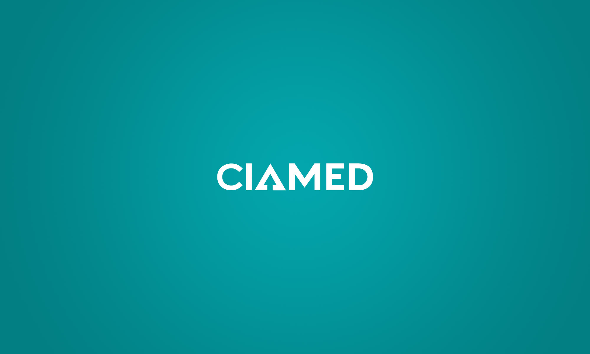

Conforme mencionei anteriormente, sou frequentemente chamado de Baga, apelido que considero
bastante interessante. Minha paixão pela programação começou durante minha primeira
experiência em
um curso de jovem aprendiz, oferecido pela empresa que trabalhei.
Naquela época, eu não possuía qualquer conhecimento na área, e, de fato,
nem mesmo tinha um computador em casa.
Foi somente em 2024 que tomei a decisão de desenvolver meu primeiro site.
Apesar dos inúmeros desafios enfrentados,
dediquei-me intensamente ao aprendizado e ao aprimoramento das minhas habilidades.
Desde então, tenho encontrado grande satisfação no desenvolvimento front-end,
área pela qual tenho um interesse crescente.
Carreira
jan/2023 - jan/2025

SUPPORT
Atuando como jovem aprendiz na área do support do TI.
Encarregado de resolver problemas de hardware e ajustes de software.
jun/2025 - atual

TECNICO
Atuando como tecnico em informatica.
Encarregado de resolver problemas de hardware e software de clientes.